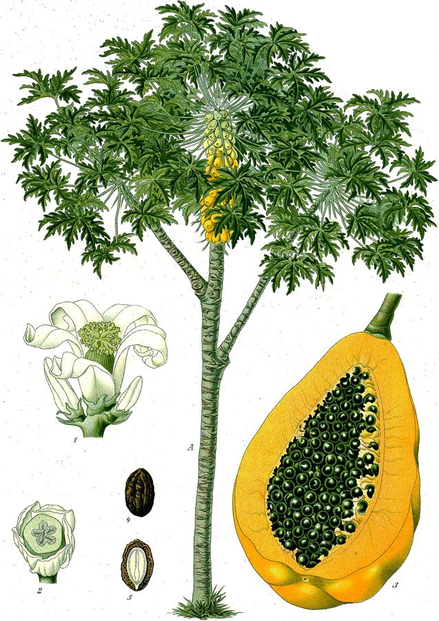

पपीताPapaya
Carica papaya · Caricaceae · FLR-0101

- Scientific name
- Carica papaya L.
- Family
- Caricaceae
- Hindi
- पपीता
- Status here
- cultivated
- IUCN
- not evaluated
When to look कब देखें
Present all year.
पपीता / Papaya
Carica papaya L. — Caricaceae
पपीता (पपीता का पेड़ / पापौ) — पूर्वी उत्तर प्रदेश के घरों के पिछवाड़े, खेतों की सीमाओं और फलों के बगीचों में तेजी से बढ़ने वाला एक बहुत ही आम, छोटा और सीधा खड़े होने वाला बहुवर्षीय शाकीय पेड़ (fast-growing short-lived herbaceous tree) है। इसकी ऊंचाई लगभग 3 से 9 मीटर तक होती है। यह मूल रूप से मध्य अमेरिका का निवासी है। इसकी सबसे बड़ी पहचान इसका बिना शाखाओं वाला खोखला तना है जिसके शीर्ष पर ताड़ के पेड़ की तरह बहुत बड़े, कटे-फटे हुए छाता-नुमा पत्ते (very large deeply-lobed leaves) लगे होते हैं। तने के ऊपरी हिस्से में पत्तों के नीचे बड़े, लंबे, लटकते हुए फल लगते हैं जो पकने पर पीले-नारंगी हो जाते हैं और जिनका अंदर का गूदा गहरा नारंगी होता है। कच्चे हरे फलों का उपयोग सब्जी व अचार बनाने के लिए, और पके फलों को सीधे खाने के लिए किया जाता है। इसके दूध (latex) में 'पेपेन' (papain) नामक एक प्रोटीन-पचाने वाला एंजाइम पाया जाता है जो मांस को गलाने और दवाओं में काम आता है। पपीता मोज़ेक वायरस (Papaya Mosaic Virus) इसका एक मुख्य वायरस रोग है जो एफिड्स द्वारा फैलता है।
Quick Identification त्वरित पहचान
| Feature | Description |
|---|---|
| Tree habit | Fast-growing, single-trunked herbaceous tree up to 3–9 meters high, with hollow, soft, spongy green wood |
| Leaves | Alternately arranged, massive (50–70 cm wide), deeply palmately 7-lobed, on long, hollow green stalks |
| Flowers | Cream-white; male flowers in long, drooping branched spikes; female and bisexual flowers larger, sitting directly in leaf joints |
| Fruit | A large, cylindrical, oblong, or spherical hollow berry (15–40 cm long); skin green turning yellow-orange |
| Seeds | Numerous, small (3–5 mm), black, wrinkled, covered in a mucilaginous wet gel sac inside the central fruit cavity |
Field tip: Look in backyards or borders of home gardens. Search for tall, straight trunks resembling palms with a crown of huge lobed leaves at the top. Inspect the upper trunk; clusters of green or yellow melon-sized fruits cling directly to the trunk below the leaves.
Morphology आकारिकी
Biometrics (typical measurements of mature trees in the northern Indian plains):
| Measurement | Range |
|---|---|
| Tree height | 3.0–9.0 m |
| Trunk diameter | 10–30 cm |
| Leaf diameter | 50.0–70.0 cm |
| Leaf stalk length | 50.0–100.0 cm |
| Fruit length | 15.0–40.0 cm |
| Fruit weight | 500–2000 g |
| Seed size | 3–5 mm |
Trunk and Stem: The trunk is soft, fibrous, marked with prominent scars from fallen leaf stems, lacking true bark or growth rings.
Foliage: The huge leaves are clustered at the stem tip, forming a dense crown. The leaves are smooth, deeply lobed into pointed leaflets.
Flowers: Usually dioecious (male and female trees are separate), though hermaphrodite trees are common. The flowers have a sweet scent.
Fruit and Seeds: The fruit skin contains a milky white latex when unripe. The interior cavity is filled with black seeds that have a peppery taste.
Cultivation Calendar कृषि कैलेंडर
- Sowing: Seedlings are raised in polythene bags from June to September (monsoon sowing) or February–March (spring sowing).
- Transplantation: Done 30–45 days after sowing when plants are 15–20 cm tall. Male and female plants are planted in a 1:10 ratio to ensure pollination.
- Life Span: Highly productive for the first 2–3 years; older trees become too tall to harvest easily and are replaced.
- Harvesting: Year-round; green fruits are picked for vegetable use, while table fruits are harvested when yellow-orange streaks cover the skin.
Associated Species / Interactions संबंधित प्रजातियाँ
- Pollination Ecology: Flowers are visited at night by sphinx moths and during the day by butterflies and honeybees.
- Host Web: The soft trunk is easily damaged by root-knot nematodes and boring insect larvae in waterlogged conditions.
Pests and Diseases कीट और रोग
- Papaya Mosaic Virus: Transmitted by green peach aphids, causing leaves to develop dark green mosaic patterns, curl, and stunting tree growth.
- Foot Rot / Damping-off: Caused by the fungus Pythium in waterlogged soils, rotting the soft stem base and causing the tree to collapse.
- Spider Mites: Small red mites suck sap under leaves during hot summer weeks, causing leaves to dry and drop.
Traditional and Ethnobotanical Use पारंपरिक और नृवंशवनस्पति उपयोग
- Meat Tenderizing Latex: Slices of unripe green papaya or its white milky latex (papita ka doodh) are added to mutton or buffalo meat during cooking to act as a natural tenderizer by breaking down tough muscle fibers.
- Dengue Treatment Leaf Juice: Juice extracted from fresh green Papaya leaves is squeezed and consumed in traditional medicine to rapidly increase blood platelet counts in dengue fever patients.
- Green Papaya Sabzi: Unripe green papaya is peeled, seed cavity scraped, sliced, and cooked with mustard seeds and spices as a dry vegetable curry (sabzi) or grated to make hot pickles.
- Digestive Enzyme Aid: Ripe papaya is eaten daily to aid digestion, treat stomach ulcers, and relieve chronic constipation.
- Abortifacient Risk Warning:
> [!WARNING]
> Traditional practices suggest using unripe green papaya latex or green fruit preparations to induce abortions in early pregnancy. This practice is highly dangerous; the concentrated latex contains active compounds that can cause severe uterine contractions, hemorrhages, and poisoning, presenting high risks to the woman's life.
Expected Locally स्थानीय रूप से अपेक्षित
Not a field record. Written from published accounts for eastern Uttar Pradesh. No confirmed local sighting yet — if you have seen it, that is what the atlas needs.
अभी तक स्थानीय पुष्टि नहीं। यह विवरण प्रकाशित स्रोतों से है, किसी अवलोकन से नहीं।
A very common fruit tree planted in home gardens (bari) and commercial farms across the Basti district, regularly observed in the Harraiya, Vikramjot, and Basti blocks. Villagers state that they always plant multiple papaya trees near their homes to ensure they have at least one fruit-bearing female or hermaphrodite tree. The green leaves are frequently harvested during monsoon dengue outbreaks.
Distribution वितरण
Global range: Native to tropical Central America and Southern Mexico; introduced globally in all tropical zones and widely cultivated.
In India: Cultivated throughout all states; India is currently the world's largest producer of Papaya.
In Uttar Pradesh: Widespread state-wide, both in commercial plantations and backyard plots.
In Basti district / eastern UP: Common in residential gardens.
Research Questions शोध प्रश्न
Anyone can investigate these | कोई भी इन प्रश्नों की जाँच कर सकता है
- What is the ratio of male to female trees in a sample of 50 seed-grown Papaya trees in your block? — Count and analyze tree gender ratios.
- Does wrapping green Papaya leaves in newspaper help them ripen faster compared to exposing them to open air? — Track ripening days.
- How many days does a dengue patient take to show platelet recovery when given papaya leaf juice compared to standard care? — Collect anonymized clinical recovery data.
- Do aphids prefer nesting on virus-infected Papaya leaves over healthy green ones? — Record pest counts.
- Does the height of a Papaya tree increase faster in compost-rich soil compared to plain river sand in Basti? / क्या बस्ती में सादे बालू की तुलना में जैविक खाद से भरपूर मिट्टी में पपीते के पेड़ की ऊँचाई तेज़ी से बढ़ती है? — Monitor weekly tree growth.
Similar Species मिलती-जुलती प्रजातियाँ
| Species | How to tell apart | comparison |
|---|---|---|
| Castor Bean (Ricinus communis) | Large shrub; leaves are palmately lobed but stems are highly branched; flowers are red-green spikes; seeds are toxic | अरंडी — कांटेदार लाल-हरे फूल, जहरीले बीज |
| Wild Date Palm (Phoenix sylvestris) | Trunk is woody, covered in leaf scars; leaves are spiny pinnate leaflets; fruit is a small single-seeded date | खजूर — कांटेदार पत्तियां, एक बीज वाले छोटे मीठे फल |
| Banyan (Ficus benghalensis) | Massive woody tree; produces aerial roots; leaves are simple, oval, thick; fruits are tiny red figs | बरगद — विशाल तना, हवाई जड़ें, छोटे गोल फल |
Field rule: Fast-growing unbranched tree with hollow trunk, crown of huge palmately lobed leaves, and large hollow green-yellow fruits clinging directly to the upper trunk, is the Papaya (Papita).
Taxonomy & Classification वर्गीकरण
Original description. Carl Linnaeus described the Papaya as Carica papaya in 1753 in his Species Plantarum (Vol. 2, p. 1036). The type locality was listed as South America (in hot zones). The genus name Carica is derived from the Latin name for a dried fig, referencing the shape of the leaves in some species. The specific name papaya comes from the Carib word for the fruit.
Subspecies. Monotypic — no subspecies are currently recognised.
Family and order placement. Placed in the order Brassicales, family Caricaceae (papaya family), which contains only six genera.
Phylogenetic notes. Carica papaya is a member of the order Brassicales, showing surprising evolutionary links to cabbage and mustard families, sharing mustard oil compounds (glucosinolates) as chemical defenses.
IUCN status rationale. Not evaluated (NE) by the IUCN Red List. It has a massive, secure global agricultural population.
Photo Gallery फोटो गैलरी
References संदर्भ
- Linnaeus, C. (1753). Species Plantarum. Laurentii Salvii, Holmiae, Vol. 2, p. 1036. [original description]
- Brandis, D. (1906). Indian Trees. Archibald Constable & Co., London.
- Kirtikar, K. R. & Basu, B. D. (1935). Indian Medicinal Plants. Vol. II. Lalit Mohan Basu, Allahabad.
- Badillo, V. M. (2000). Carica papaya L. (Caricaceae): A Systematic Treatment of the Genus. Ernstia.
- World Flora Online (2024). Carica papaya details.
- GBIF Occurrence Data — Carica papaya, India (2010–2025).
Source file: species/flora/crops/papaya.md